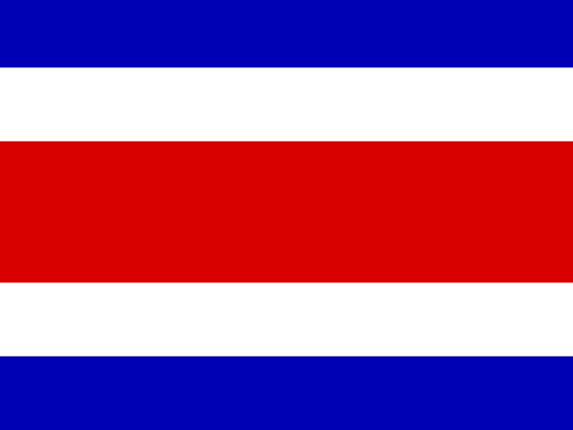

Question 91Verified completed result

Flag / Country🟩 Independent
Your answer: barbadosCorrect: Barbados
Capital🟩 Independent
Your answer: bridgetownCorrect: Bridgetown
Language🟩 Independent
Your answer: englishCorrect: English
Batch 10 · Q91–Q100 · 19 October 2026 · 30/30 Independent
| Score | Flags / Country | Capitals | Languages |
|---|---|---|---|
| Pure | 10/10 (100%) | 10/10 (100%) | 10/10 (100%) |
| Pure + Assisted | 10/10 (100%) | 10/10 (100%) | 10/10 (100%) |
| Independent | 10 | 10 | 10 |
| Assisted | 0 | 0 | 0 |
| Wrong | 0 | 0 | 0 |
| Cancelled | 0 | 0 | 0 |
| Score | Flags / Country | Capitals | Languages |
|---|---|---|---|
| Pure | 100/100 (100%) | 100/100 (100%) | 100/100 (100%) |
| Pure + Assisted | 100/100 (100%) | 100/100 (100%) | 100/100 (100%) |
| Independent | 100 | 100 | 100 |
| Assisted | 0 | 0 | 0 |
| Wrong | 0 | 0 | 0 |
| Cancelled | 0 | 0 | 0 |

Clear phonetic spelling accepted.


Bandar serai accepted under existing Brunei Bandar shorthand precedent.


Andorra accepted under standing shorthand for Andorra la Vella.

Bahasa accepted in this country's explicit context as colloquial shorthand for Bahasa Indonesia/Indonesian, not a blanket synonym for any language.

Clear phonetic spelling accepted.

Clear phonetic spelling accepted.

| Q | Your Country | Correct Country | Flag | Your Capital | Correct Capital | Capital | Your Language | Correct Language(s) | Language |
|---|---|---|---|---|---|---|---|---|---|
| 91 | barbados | Barbados | 🟩 Independent | bridgetown | Bridgetown | 🟩 Independent | english | English | 🟩 Independent |
| 92 | slovenia | Slovenia | 🟩 Independent | lujibliana | Ljubljana | 🟩 Independent | slovene | Slovene; Italian; Hungarian (regional) | 🟩 Independent |
| 93 | brazil | Brazil | 🟩 Independent | brasilia | Brasília | 🟩 Independent | portguese | Portuguese | 🟩 Independent |
| 94 | brunei | Brunei | 🟩 Independent | bandar serai | Bandar Seri Begawan | 🟩 Independent | malay | Malay | 🟩 Independent |
| 95 | costa rica | Costa Rica | 🟩 Independent | san jose | San José | 🟩 Independent | spanish | Spanish | 🟩 Independent |
| 96 | andorra | Andorra | 🟩 Independent | andorra | Andorra la Vella | 🟩 Independent | catalan | Catalan | 🟩 Independent |
| 97 | indonesia | Indonesia | 🟩 Independent | jakarta | Jakarta | 🟩 Independent | bahasa | Indonesian | 🟩 Independent |
| 98 | chad | Chad | 🟩 Independent | ndjamina | N'Djamena | 🟩 Independent | french | Arabic; French | 🟩 Independent |
| 99 | iran | Iran | 🟩 Independent | tahran | Tehran | 🟩 Independent | persian | Persian (Farsi) | 🟩 Independent |
| 100 | usa | United States | 🟩 Independent | washington dc | Washington, D.C. | 🟩 Independent | english | English (2025 federal executive order) | 🟩 Independent |
All 30 components Independent with no clues. Phonetic capital variants accepted, Brunei and Andorra short forms accepted, and Bahasa contextually accepted for Indonesian.
100 / 195 countries · Batch 10 of 20 complete · 95 remaining
Combined Pure 300/300: Flags 100/100; Capitals 100/100; Languages 100/100.